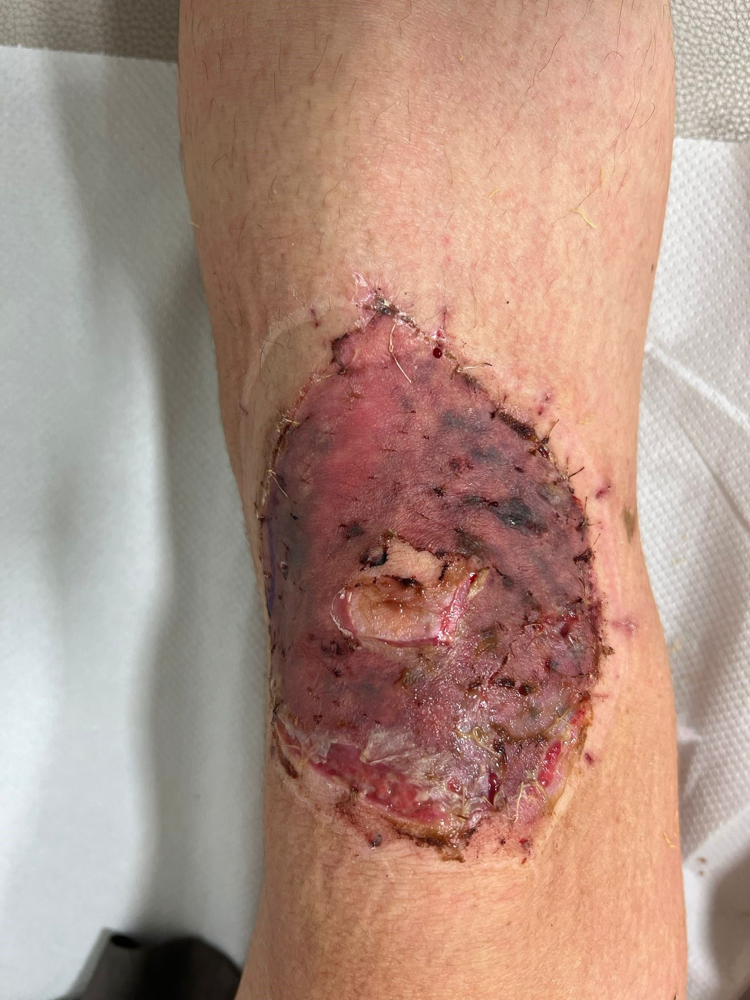
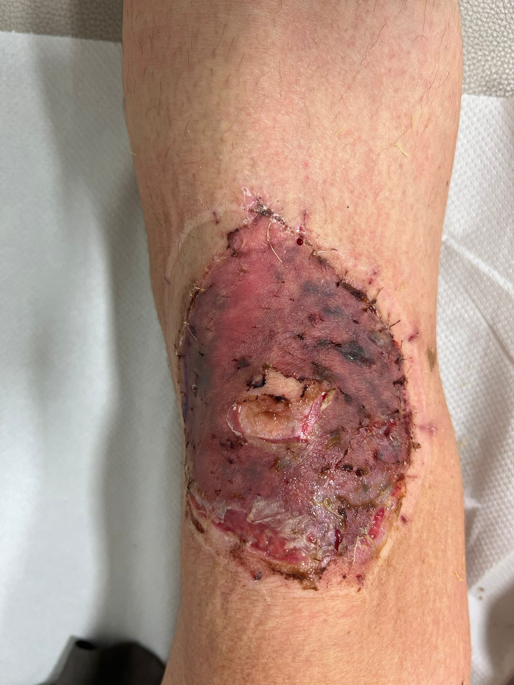

DAY 1
|
I was very tired and hungry. I thought I'd cook my self some pasta, but I had literatury in the fridge. I spotted the cans of tuna on the shelf, took one and lookd for a can opener. Couldn't find one. My housemate told me she opened hers with a knife. I thought: why not. Took a big knife. My housemate left the kitchen. I cut myself. It was a very small cut, no real harm done. I felt like I was going to faint. I sat down and stood up again. Gave up on the can of tuna, but not on the pasta. I raised the Kettle full of boling water to pour it in the sauce pan. I fainted. The boling water fell on the floor and my knees bathed thre for a while (5, 10, 15 seconds? I don' know. I woke up and did not realise I birned my knees. Gave up on the pasta and went to bed. My trousers were wet. I took them off and this is what I saw. |

I went online to find out what to think. Third degree, second degree? White skin. Bad sign. No blisters, good sign? I called 111. I listened to a few mintues of preregesterd covid advice. Some real picked up. Lots of inconsequantial questions. No I don;t have a heart attack. An expert will call you back in a little while to tell you what to do. Cya. I waited and this what I saw after 20 minutes or so. |


I called 111 again. Lestened to the covid mesage once again. Some real picked up. Why has no one called me yet? I am in pain and I need someone to tell what to think and what to do. Someone will call you soon. Do you report any changes. Yes some blisters are forming. Ok so you are calling to report some changes. No I am callling to ask if someone will ever call me back. Someone will call you back shortly but you are reporting some changes. Yes I am. Ok bye. cya. In the meanwhile the blisters got bigger. The called me. Appontment at 11:45. Ok great. |


We got to the A&E. We are for an appointment. We don;t take appontments. What? But I was told by 111 I had one. We don;t take them. So why did they tell ma that? They keep saying that, but it's just not true. Why don;t you take appintments? No A&E does. So 111 tells people they have an appintment when they don;t/ Yep. I spent the whole night in A&E. Mainly waiting. By the time I say a skin specialist it was 8.30 am. The blisters got huge. I did not take a picture of the biggest it got. But at something like 4pm my knees looked like this. |
DAY 5

no blisteres. Live skin. |
DAY 8
|
At the hospital. This is what I saw. The nurse tells me it's clearly a third degree burn (she does not say this actually). But in any case I skin grafting ASAP. Great. <\p> |
DAY 12

Very artistic if you ask me. But facking painful and tedious to change the bandages this time. The cream got stuck on my skin and the bandages. So you pull the bandaged you wrip the skin. Fun times. This is the last time I saw my old knees. <\p> |
DAY 22
 

hell yeah. |
DAY 26


This was the scariest one for me. My left knee looked alright. My right knee freaked me out a little. I just couldn;t tell what the hell was going over there. Live meat mixed in the pale skin. too much live meat. It did not look good. It did not smell good either. |
Some history
Some fun facts
|
hvhhdabfv fndjapn fjdafnapfn fajsfnap pjfndpabvjad apfjanfp |